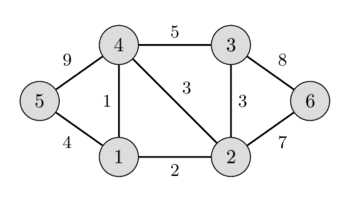
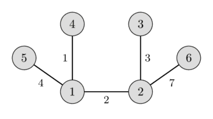

মিনিমাম স্প্যানিং ট্রি - প্রিমের অ্যালগরিদম¶
একটি ওয়েটেড, আনডিরেক্টেড গ্রাফ $G$ দেওয়া আছে যেটিতে $n$টি ভার্টেক্স ও $m$টি এজ রয়েছে। আপনি এই গ্রাফের এমন একটি স্প্যানিং ট্রি খুঁজতে চান যেটি সকল ভার্টেক্সকে সংযুক্ত করে এবং সর্বনিম্ন ওয়েট ধারণ করে (অর্থাৎ এজের ওয়েটের যোগফল ন্যূনতম)। একটি স্প্যানিং ট্রি হলো এজের এমন একটি সেট যেখানে যেকোনো ভার্টেক্স থেকে অন্য যেকোনো ভার্টেক্সে ঠিক একটি সিম্পল পাথ দিয়ে পৌঁছানো যায়। সর্বনিম্ন ওয়েটের স্প্যানিং ট্রিকে মিনিমাম স্প্যানিং ট্রি বলা হয়।
বাম ছবিতে আপনি একটি ওয়েটেড আনডিরেক্টেড গ্রাফ দেখতে পাচ্ছেন, এবং ডান ছবিতে সংশ্লিষ্ট মিনিমাম স্প্যানিং ট্রি দেখতে পাচ্ছেন।


এটি সহজেই দেখা যায় যে যেকোনো স্প্যানিং ট্রিতে অবশ্যই $n-1$টি এজ থাকবে।
এই সমস্যাটি অনেক সমস্যায় বেশ স্বাভাবিকভাবে উপস্থিত হয়। উদাহরণস্বরূপ নিম্নলিখিত সমস্যায়: $n$টি শহর আছে এবং প্রতিটি শহরের জোড়ার জন্য আমরা জানি তাদের মধ্যে রাস্তা তৈরি করতে কত খরচ হবে (বা আমরা জানি যে তাদের মধ্যে রাস্তা তৈরি করা শারীরিকভাবে অসম্ভব)। আমাদের রাস্তা তৈরি করতে হবে যেন প্রতিটি শহর থেকে অন্য প্রতিটি শহরে যাওয়া যায়, এবং সকল রাস্তা তৈরির খরচ ন্যূনতম হয়।
প্রিমের অ্যালগরিদম¶
এই অ্যালগরিদমটি মূলত ১৯৩০ সালে চেক গণিতবিদ ভোয়তেখ ইয়ার্নিক আবিষ্কার করেন। তবে এই অ্যালগরিদমটি মূলত প্রিমের অ্যালগরিদম নামে পরিচিত, আমেরিকান গণিতবিদ রবার্ট ক্লে প্রিমের নামে, যিনি ১৯৫৭ সালে এটি পুনরায় আবিষ্কার ও প্রকাশ করেন। এছাড়াও এডসগার ডেইকস্ট্রা ১৯৫৯ সালে এই অ্যালগরিদম প্রকাশ করেন।
অ্যালগরিদমের বর্ণনা¶
এখানে আমরা অ্যালগরিদমটি তার সবচেয়ে সরল রূপে বর্ণনা করব। মিনিমাম স্প্যানিং ট্রি ধীরে ধীরে একটি করে এজ যোগ করে তৈরি করা হয়। প্রথমে স্প্যানিং ট্রিতে শুধু একটি ভার্টেক্স থাকে (যেকোনোভাবে বাছাই করা)। তারপর এই ভার্টেক্স থেকে বের হওয়া সর্বনিম্ন ওয়েটের এজ নির্বাচন করা হয় এবং স্প্যানিং ট্রিতে যোগ করা হয়। এর পরে স্প্যানিং ট্রিতে ইতিমধ্যে দুটি ভার্টেক্স রয়েছে। এখন সর্বনিম্ন ওয়েটের সেই এজটি নির্বাচন ও যোগ করুন যার একটি প্রান্ত ইতিমধ্যে নির্বাচিত ভার্টেক্সে (অর্থাৎ স্প্যানিং ট্রির অংশ এমন ভার্টেক্সে) এবং অন্য প্রান্ত অনির্বাচিত ভার্টেক্সে। এভাবে চলতে থাকে, অর্থাৎ প্রতিবার আমরা ন্যূনতম ওয়েটের সেই এজ নির্বাচন ও যোগ করি যেটি একটি নির্বাচিত ভার্টেক্সকে একটি অনির্বাচিত ভার্টেক্সের সাথে সংযুক্ত করে। স্প্যানিং ট্রি সকল ভার্টেক্স ধারণ না করা পর্যন্ত (বা সমতুল্যভাবে আমরা $n - 1$টি এজ না পাওয়া পর্যন্ত) এই প্রক্রিয়া পুনরাবৃত্তি করা হয়।
শেষে নির্মিত স্প্যানিং ট্রি ন্যূনতম হবে। যদি গ্রাফটি মূলত সংযুক্ত না থাকে, তাহলে কোনো স্প্যানিং ট্রি নেই, তাই নির্বাচিত এজের সংখ্যা $n - 1$-এর কম হবে।
প্রমাণ¶
ধরা যাক গ্রাফ $G$ সংযুক্ত, অর্থাৎ উত্তর বিদ্যমান। আমরা $T$ দ্বারা প্রিমের অ্যালগরিদম দ্বারা পাওয়া ফলাফল গ্রাফ এবং $S$ দ্বারা মিনিমাম স্প্যানিং ট্রি চিহ্নিত করি। স্পষ্টতই $T$ প্রকৃতপক্ষে একটি স্প্যানিং ট্রি এবং $G$-এর একটি সাবগ্রাফ। আমাদের শুধু দেখাতে হবে যে $S$ ও $T$-এর ওয়েট সমান।
অ্যালগরিদমে প্রথমবার যখন আমরা $T$-তে এমন একটি এজ যোগ করি যেটি $S$-এর অংশ নয়, সেই সময়টি বিবেচনা করুন। আমরা এই এজটিকে $e$ দিয়ে, এর প্রান্তগুলো $a$ ও $b$ দিয়ে এবং ইতিমধ্যে নির্বাচিত ভার্টেক্সের সেটটিকে $V$ দিয়ে ($a \in V$ ও $b \notin V$, বা বিপরীত) চিহ্নিত করি।
মিনিমাম স্প্যানিং ট্রি $S$-এ ভার্টেক্স $a$ ও $b$ কোনো পাথ $P$ দ্বারা সংযুক্ত। এই পাথে আমরা এমন একটি এজ $f$ খুঁজে পেতে পারি যার একটি প্রান্ত $V$-তে এবং অন্য প্রান্ত $V$-তে নেই। যেহেতু অ্যালগরিদম $f$-এর পরিবর্তে $e$ বেছে নিয়েছে, এর মানে $f$-এর ওয়েট $e$-এর ওয়েটের চেয়ে বেশি বা সমান।
আমরা মিনিমাম স্প্যানিং ট্রি $S$-এ এজ $e$ যোগ করি এবং এজ $f$ সরিয়ে দিই। $e$ যোগ করে আমরা একটি সাইকেল তৈরি করেছি, এবং যেহেতু $f$-ও একমাত্র সাইকেলের অংশ ছিল, এটি সরিয়ে ফলাফল গ্রাফ আবার সাইকেলমুক্ত হয়। এবং যেহেতু আমরা শুধু একটি সাইকেল থেকে একটি এজ সরিয়েছি, ফলাফল গ্রাফ এখনও সংযুক্ত।
ফলাফল স্প্যানিং ট্রির মোট ওয়েট বড় হতে পারে না, যেহেতু $e$-এর ওয়েট $f$-এর ওয়েটের চেয়ে বড় ছিল না, এবং ছোটও হতে পারে না যেহেতু $S$ একটি মিনিমাম স্প্যানিং ট্রি ছিল। এর মানে এজ $f$-কে $e$ দিয়ে প্রতিস্থাপন করে আমরা একটি ভিন্ন মিনিমাম স্প্যানিং ট্রি তৈরি করেছি। এবং $e$-এর ওয়েট $f$-এর ওয়েটের সমান হতে হবে।
সুতরাং প্রিমের অ্যালগরিদমে আমরা যে সকল এজ বেছে নিই তাদের ওয়েট যেকোনো মিনিমাম স্প্যানিং ট্রির এজের ওয়েটের সমান, যার মানে প্রিমের অ্যালগরিদম প্রকৃতপক্ষে একটি মিনিমাম স্প্যানিং ট্রি তৈরি করে।
ইমপ্লিমেন্টেশন¶
অ্যালগরিদমের কমপ্লেক্সিটি নির্ভর করে আমরা কীভাবে উপযুক্ত এজগুলোর মধ্যে পরবর্তী ন্যূনতম এজ খুঁজি। বিভিন্ন পদ্ধতি আছে যা বিভিন্ন কমপ্লেক্সিটি ও বিভিন্ন ইমপ্লিমেন্টেশনে নিয়ে যায়।
সাধারণ ইমপ্লিমেন্টেশন: $O(n m)$ ও $O(n^2 + m \log n)$¶
যদি আমরা সকল সম্ভাব্য এজ ইটারেট করে এজ খুঁজি, তাহলে ন্যূনতম ওয়েটের এজ খুঁজতে $O(m)$ সময় লাগে। মোট কমপ্লেক্সিটি হবে $O(n m)$। সবচেয়ে খারাপ ক্ষেত্রে এটি $O(n^3)$, যা সত্যিই ধীর।
এই অ্যালগরিদম উন্নত করা যায় যদি আমরা প্রতিটি ইতিমধ্যে নির্বাচিত ভার্টেক্স থেকে শুধু একটি এজ দেখি। উদাহরণস্বরূপ আমরা প্রতিটি ভার্টেক্স থেকে এজগুলো ওয়েটের ঊর্ধ্বক্রমে সর্ট করতে পারি, এবং প্রথম বৈধ এজে (অর্থাৎ অনির্বাচিত ভার্টেক্সে যায় এমন এজ) একটি পয়েন্টার রাখতে পারি। তারপর ন্যূনতম এজ খুঁজে নির্বাচন করার পর, আমরা পয়েন্টারগুলো আপডেট করি। এতে কমপ্লেক্সিটি $O(n^2 + m)$ হয়, এবং এজ সর্ট করতে অতিরিক্ত $O(m \log n)$, যা সবচেয়ে খারাপ ক্ষেত্রে $O(n^2 \log n)$ কমপ্লেক্সিটি দেয়।
নিচে আমরা দুটি সামান্য ভিন্ন অ্যালগরিদম বিবেচনা করব, একটি ঘন গ্রাফের জন্য এবং একটি স্পার্স গ্রাফের জন্য, উভয়ই উন্নত কমপ্লেক্সিটিসহ।
ঘন গ্রাফ: $O(n^2)$¶
আমরা এই সমস্যাটিকে ভিন্ন দৃষ্টিকোণ থেকে দেখি: প্রতিটি এখনও অনির্বাচিত ভার্টেক্সের জন্য আমরা ইতিমধ্যে নির্বাচিত ভার্টেক্সে যাওয়ার ন্যূনতম এজ সংরক্ষণ করব।
তারপর একটি ধাপে আমাদের শুধু এই ন্যূনতম ওয়েটের এজগুলো দেখতে হবে, যার কমপ্লেক্সিটি $O(n)$ হবে।
একটি এজ যোগ করার পর কিছু ন্যূনতম এজ পয়েন্টার পুনরায় গণনা করতে হবে। লক্ষ্য করুন যে ওয়েট কেবল কমতে পারে, অর্থাৎ প্রতিটি এখনও অনির্বাচিত ভার্টেক্সের ন্যূনতম ওয়েট এজ একই থাকতে পারে, অথবা নতুন নির্বাচিত ভার্টেক্সে যাওয়া এজ দ্বারা আপডেট হবে। তাই এই ফেজটিও $O(n)$-এ করা যায়।
এভাবে আমরা প্রিমের অ্যালগরিদমের $O(n^2)$ কমপ্লেক্সিটির একটি ভার্সন পেলাম।
বিশেষ করে এই ইমপ্লিমেন্টেশনটি ইউক্লিডীয় মিনিমাম স্প্যানিং ট্রি সমস্যার জন্য খুবই সুবিধাজনক: আমাদের সমতলে $n$টি বিন্দু আছে এবং প্রতিটি জোড়া বিন্দুর মধ্যে দূরত্ব তাদের ইউক্লিডীয় দূরত্ব, এবং আমরা এই সম্পূর্ণ গ্রাফের জন্য একটি মিনিমাম স্প্যানিং ট্রি খুঁজতে চাই। এই কাজটি বর্ণিত অ্যালগরিদম দ্বারা $O(n^2)$ সময়ে ও $O(n)$ মেমোরিতে সমাধান করা যায়, যা ক্রুস্কালের অ্যালগরিদম দিয়ে সম্ভব নয়।
int n;
vector<vector<int>> adj; // adjacency matrix of graph
const int INF = 1000000000; // weight INF means there is no edge
struct Edge {
int w = INF, to = -1;
};
void prim() {
int total_weight = 0;
vector<bool> selected(n, false);
vector<Edge> min_e(n);
min_e[0].w = 0;
for (int i=0; i<n; ++i) {
int v = -1;
for (int j = 0; j < n; ++j) {
if (!selected[j] && (v == -1 || min_e[j].w < min_e[v].w))
v = j;
}
if (min_e[v].w == INF) {
cout << "No MST!" << endl;
exit(0);
}
selected[v] = true;
total_weight += min_e[v].w;
if (min_e[v].to != -1)
cout << v << " " << min_e[v].to << endl;
for (int to = 0; to < n; ++to) {
if (adj[v][to] < min_e[to].w)
min_e[to] = {adj[v][to], v};
}
}
cout << total_weight << endl;
}
$n \times n$ আকারের অ্যাডজেসেন্সি ম্যাট্রিক্স adj[][] এজের ওয়েট সংরক্ষণ করে, এবং দুটি ভার্টেক্সের মধ্যে কোনো এজ না থাকলে ওয়েট INF ব্যবহার করে।
অ্যালগরিদমটি দুটি অ্যারে ব্যবহার করে: ফ্ল্যাগ selected[], যা নির্দেশ করে কোন ভার্টেক্সগুলো আমরা ইতিমধ্যে নির্বাচন করেছি, এবং অ্যারে min_e[] যা প্রতিটি এখনও-অনির্বাচিত ভার্টেক্সের জন্য নির্বাচিত ভার্টেক্সে যাওয়ার ন্যূনতম ওয়েটের এজ সংরক্ষণ করে (এটি ওয়েট ও প্রান্তের ভার্টেক্স সংরক্ষণ করে)।
অ্যালগরিদমটি $n$ ধাপ সম্পন্ন করে, প্রতিটি ইটারেশনে সবচেয়ে ছোট এজ ওয়েটের ভার্টেক্স নির্বাচিত হয়, এবং অন্য সকল ভার্টেক্সের min_e[] আপডেট হয়।
স্পার্স গ্রাফ: $O(m \log n)$¶
উপরে বর্ণিত অ্যালগরিদমে ন্যূনতম খুঁজে বের করা ও কিছু মান পরিবর্তন করার অপারেশনগুলোকে সেট অপারেশন হিসেবে ব্যাখ্যা করা সম্ভব।
এই দুটি ক্লাসিক অপারেশন অনেক ডেটা স্ট্রাকচার দ্বারা সমর্থিত, উদাহরণস্বরূপ C++-এ set (যেটি রেড-ব্ল্যাক ট্রি দ্বারা ইমপ্লিমেন্ট করা হয়)।
মূল অ্যালগরিদম একই থাকে, কিন্তু এখন আমরা $O(\log n)$ সময়ে ন্যূনতম এজ খুঁজতে পারি। অন্যদিকে পয়েন্টার পুনরায় গণনা করতে এখন $O(n \log n)$ সময় লাগবে, যা আগের অ্যালগরিদমের চেয়ে খারাপ।
কিন্তু যদি বিবেচনা করি যে আমাদের মোট মাত্র $O(m)$ বার আপডেট করতে হবে, এবং ন্যূনতম এজের জন্য $O(n)$ বার সার্চ করতে হবে, তাহলে মোট কমপ্লেক্সিটি হবে $O(m \log n)$। স্পার্স গ্রাফের জন্য এটি উপরের অ্যালগরিদমের চেয়ে ভালো, কিন্তু ঘন গ্রাফের জন্য এটি ধীর হবে।
const int INF = 1000000000;
struct Edge {
int w = INF, to = -1;
bool operator<(Edge const& other) const {
return make_pair(w, to) < make_pair(other.w, other.to);
}
};
int n;
vector<vector<Edge>> adj;
void prim() {
int total_weight = 0;
vector<Edge> min_e(n);
min_e[0].w = 0;
set<Edge> q;
q.insert({0, 0});
vector<bool> selected(n, false);
for (int i = 0; i < n; ++i) {
if (q.empty()) {
cout << "No MST!" << endl;
exit(0);
}
int v = q.begin()->to;
selected[v] = true;
total_weight += q.begin()->w;
q.erase(q.begin());
if (min_e[v].to != -1)
cout << v << " " << min_e[v].to << endl;
for (Edge e : adj[v]) {
if (!selected[e.to] && e.w < min_e[e.to].w) {
q.erase({min_e[e.to].w, e.to});
min_e[e.to] = {e.w, v};
q.insert({e.w, e.to});
}
}
}
cout << total_weight << endl;
}
এখানে গ্রাফটি অ্যাডজেসেন্সি লিস্ট adj[] দ্বারা উপস্থাপিত, যেখানে adj[v] ভার্টেক্স v-এর সকল এজ (ওয়েট ও টার্গেট জোড়ার আকারে) ধারণ করে।
min_e[v] ভার্টেক্স v থেকে ইতিমধ্যে নির্বাচিত ভার্টেক্সে যাওয়ার সবচেয়ে ছোট এজের ওয়েট সংরক্ষণ করবে (আবার ওয়েট ও টার্গেট জোড়ার আকারে)।
এছাড়া কিউ q-তে সকল এখনও অনির্বাচিত ভার্টেক্স min_e-এর ঊর্ধ্বক্রমে ভরা থাকে।
অ্যালগরিদমটি n ধাপ সম্পন্ন করে, প্রতিটিতে সবচেয়ে ছোট ওয়েটের min_e সহ ভার্টেক্স v নির্বাচন করে (কিউ-এর শুরু থেকে বের করে), এবং তারপর এই ভার্টেক্স থেকে সকল এজ দেখে min_e-এর মান আপডেট করে (আপডেটের সময় আমাদের কিউ q থেকে পুরানো এজ সরিয়ে নতুন এজ রাখতে হয়)।